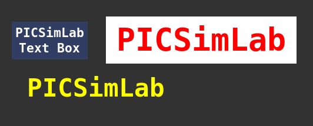

1
Introduction
2
Install
3
Simulator Interface
4
Boards
5
Serial Communication
6
Backend Simulators
7
Tools
8
Oscilloscope
9
Spare Parts
9.1
Pin Alias
9.2
Inputs
9.3
Outputs
9.4
Others
9.5
Virtual
9.5.1
D. Transfer Function
9.5.2
IO Virtual Term
9.5.3
Signal Generator
9.5.4
Text Box
9.5.5
VCD Dump
9.5.6
VCD Dump (Analogic)
9.5.7
VCD Play
10
Troubleshooting
11
License
A
Online Simulator
B
Use with MPLABX
C
Creating New Boards
[
prev
] [
up
] [
next
]
9.5.4
Text Box
This part is static multiline text box.

Examples
[
prev
] [
up
] [
next
]